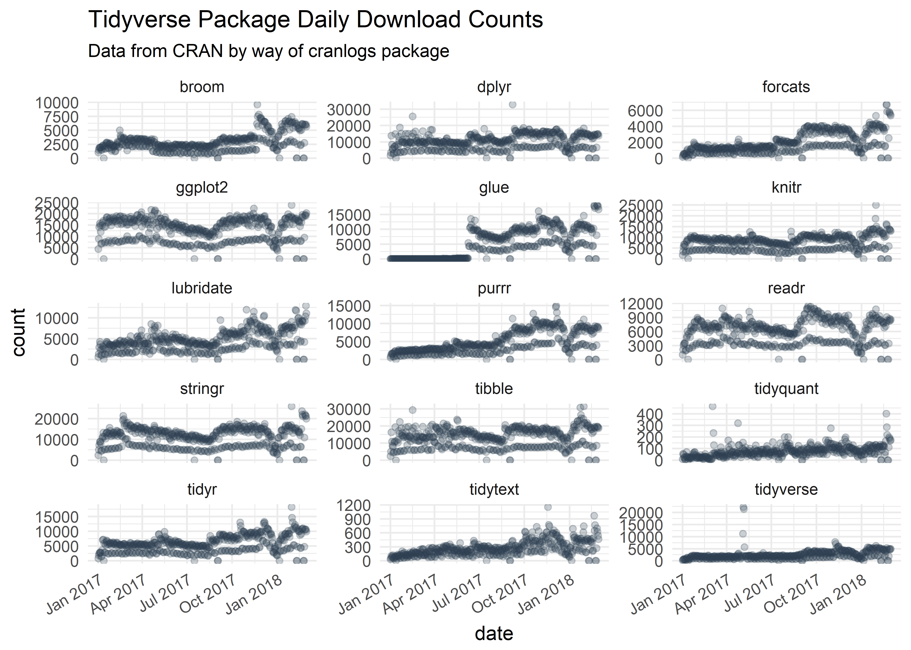
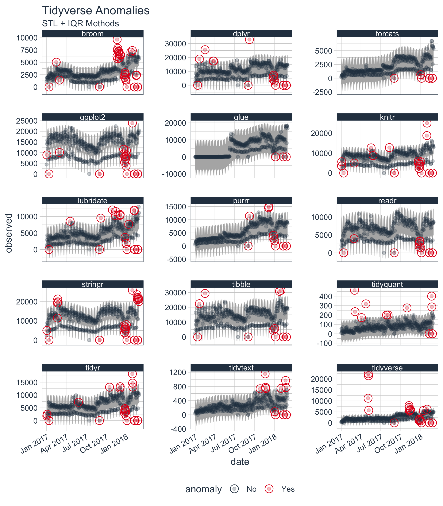
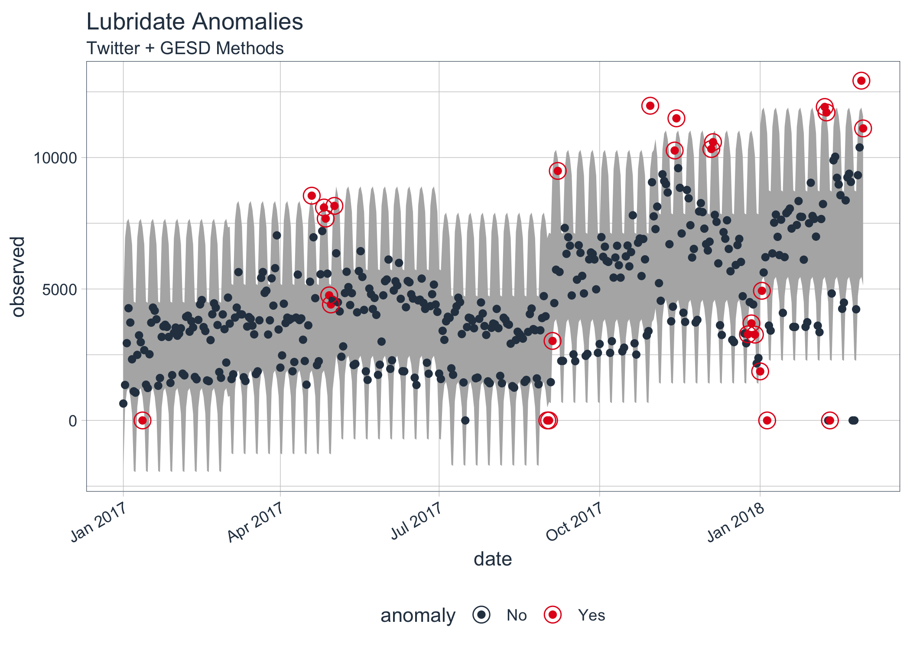
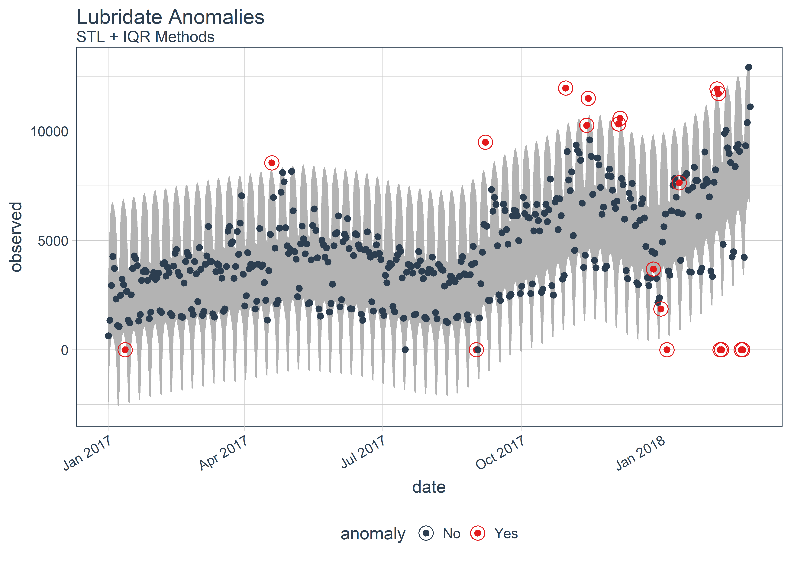
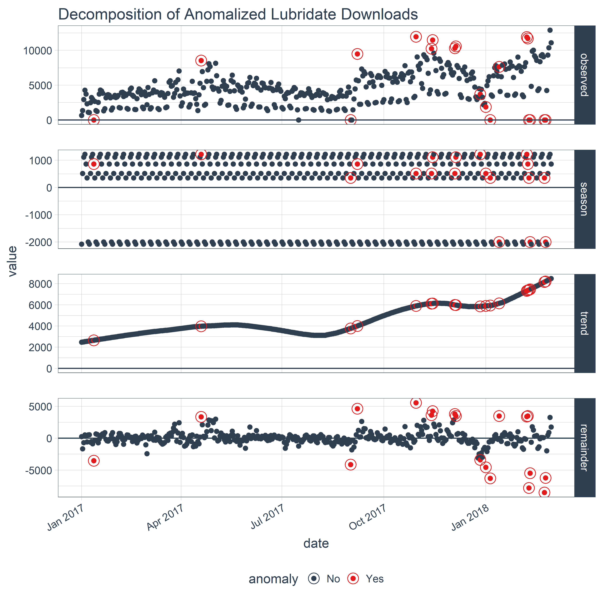

Tidy anomaly detection
anomalize enables a tidy workflow for detecting anomalies in data. The main functions are time_decompose(), anomalize(), and time_recompose(). When combined, it’s quite simple to decompose time series, detect anomalies, and create bands separating the “normal” data from the anomalous data.

Installation
You can install the development version with devtools or the most recent CRAN version with install.packages():
How It Works
anomalize has three main functions:
-
time_decompose(): Separates the time series into seasonal, trend, and remainder components -
anomalize(): Applies anomaly detection methods to the remainder component. -
time_recompose(): Calculates limits that separate the “normal” data from the anomalies!
Getting Started
Load the tidyverse and anomalize packages.
Next, let’s get some data. anomalize ships with a data set called tidyverse_cran_downloads that contains the daily CRAN download counts for 15 “tidy” packages from 2017-01-01 to 2018-03-01.
tidyverse_cran_downloads %>%
ggplot(aes(date, count)) +
geom_point(color = "#2c3e50", alpha = 0.25) +
facet_wrap(~ package, scale = "free_y", ncol = 3) +
theme_minimal() +
theme(axis.text.x = element_text(angle = 30, hjust = 1)) +
labs(title = "Tidyverse Package Daily Download Counts",
subtitle = "Data from CRAN by way of cranlogs package")
Suppose we want to determine which daily download “counts” are anomalous. It’s as easy as using the three main functions (time_decompose(), anomalize(), and time_recompose()) along with a visualization function, plot_anomalies().
tidyverse_cran_downloads %>%
# Data Manipulation / Anomaly Detection
time_decompose(count, method = "stl") %>%
anomalize(remainder, method = "iqr") %>%
time_recompose() %>%
# Anomaly Visualization
plot_anomalies(time_recomposed = TRUE, ncol = 3, alpha_dots = 0.25) +
labs(title = "Tidyverse Anomalies", subtitle = "STL + IQR Methods") 
If you’re familiar with Twitter’s AnomalyDetection package, you can implement that method by combining time_decompose(method = "twitter") with anomalize(method = "gesd"). Additionally, we’ll adjust the trend = "2 months" to adjust the median spans, which is how Twitter’s decomposition method works.
# Get only lubridate downloads
lubridate_dloads <- tidyverse_cran_downloads %>%
filter(package == "lubridate") %>%
ungroup()
# Anomalize!!
lubridate_dloads %>%
# Twitter + GESD
time_decompose(count, method = "twitter", trend = "2 months") %>%
anomalize(remainder, method = "gesd") %>%
time_recompose() %>%
# Anomaly Visualziation
plot_anomalies(time_recomposed = TRUE) +
labs(title = "Lubridate Anomalies", subtitle = "Twitter + GESD Methods")
Last, we can compare to STL + IQR methods, which use different decomposition and anomaly detection approaches.
lubridate_dloads %>%
# STL + IQR Anomaly Detection
time_decompose(count, method = "stl", trend = "2 months") %>%
anomalize(remainder, method = "iqr") %>%
time_recompose() %>%
# Anomaly Visualization
plot_anomalies(time_recomposed = TRUE) +
labs(title = "Lubridate Anomalies", subtitle = "STL + IQR Methods")
But Wait, There’s More!
There are a several extra capabilities:
-
time_frequency()andtime_trend()for generating frequency and trend spans using date and datetime information, which is more intuitive than selecting numeric values. Also,period = "auto"automatically selects frequency and trend spans based on the time scale of the data.
-
plot_anomaly_decomposition()for visualizing the inner workings of how algorithm detects anomalies in the “remainder”.
tidyverse_cran_downloads %>%
filter(package == "lubridate") %>%
ungroup() %>%
time_decompose(count) %>%
anomalize(remainder) %>%
plot_anomaly_decomposition() +
labs(title = "Decomposition of Anomalized Lubridate Downloads")
- Vector functions for anomaly detection:
iqr()andgesd(). These are great for just using on numeric data. Note that trend and seasonality should already be removed for time series data.
# Data with outliers
set.seed(100)
x <- rnorm(100)
idx_outliers <- sample(100, size = 5)
x[idx_outliers] <- x[idx_outliers] + 10
# IQR method
iqr(x, alpha = 0.05, max_anoms = 0.2)
#> [1] "No" "No" "No" "No" "No" "No" "No" "No" "No" "No" "No"
#> [12] "No" "No" "No" "No" "No" "No" "No" "No" "No" "No" "No"
#> [23] "No" "No" "No" "No" "No" "No" "No" "No" "Yes" "No" "No"
#> [34] "No" "No" "No" "Yes" "No" "No" "No" "No" "No" "No" "No"
#> [45] "No" "No" "No" "No" "No" "No" "No" "No" "No" "No" "No"
#> [56] "No" "No" "No" "No" "No" "No" "No" "No" "No" "No" "No"
#> [67] "No" "No" "No" "No" "No" "No" "No" "No" "No" "No" "No"
#> [78] "No" "No" "Yes" "No" "No" "No" "No" "No" "No" "No" "No"
#> [89] "No" "Yes" "No" "No" "No" "No" "Yes" "No" "No" "No" "No"
#> [100] "No"- Anomaly Reports: Using
verbose = TRUE, we can return a nice report of useful information related to the outliers.
lubridate_dloads %>%
time_decompose(count) %>%
anomalize(remainder, verbose = TRUE)
#> $anomalized_tbl
#> # A time tibble: 425 x 8
#> # Index: date
#> date observed season trend remainder remainder_l1 remainder_l2
#> <date> <dbl> <dbl> <dbl> <dbl> <dbl> <dbl>
#> 1 2017-01-01 643. -2078. 2474. 246. -3323. 3310.
#> 2 2017-01-02 1350. 518. 2491. -1659. -3323. 3310.
#> 3 2017-01-03 2940. 1117. 2508. -685. -3323. 3310.
#> 4 2017-01-04 4269. 1220. 2524. 525. -3323. 3310.
#> 5 2017-01-05 3724. 865. 2541. 318. -3323. 3310.
#> 6 2017-01-06 2326. 356. 2558. -588. -3323. 3310.
#> 7 2017-01-07 1107. -1998. 2574. 531. -3323. 3310.
#> 8 2017-01-08 1058. -2078. 2591. 545. -3323. 3310.
#> 9 2017-01-09 2494. 518. 2608. -632. -3323. 3310.
#> 10 2017-01-10 3237. 1117. 2624. -504. -3323. 3310.
#> # ... with 415 more rows, and 1 more variable: anomaly <chr>
#>
#> $anomaly_details
#> $anomaly_details$outlier
#> [1] "No" "No" "No" "No" "No" "No" "No" "No" "No" "No" "No"
#> [12] "Yes" "No" "No" "No" "No" "No" "No" "No" "No" "No" "No"
#> [23] "No" "No" "No" "No" "No" "No" "No" "No" "No" "No" "No"
#> [34] "No" "No" "No" "No" "No" "No" "No" "No" "No" "No" "No"
#> [45] "No" "No" "No" "No" "No" "No" "No" "No" "No" "No" "No"
#> [56] "No" "No" "No" "No" "No" "No" "No" "No" "No" "No" "No"
#> [67] "No" "No" "No" "No" "No" "No" "No" "No" "No" "No" "No"
#> [78] "No" "No" "No" "No" "No" "No" "No" "No" "No" "No" "No"
#> [89] "No" "No" "No" "No" "No" "No" "No" "No" "No" "No" "No"
#> [100] "No" "No" "No" "No" "No" "No" "No" "No" "No" "Yes" "No"
#> [111] "No" "No" "No" "No" "No" "No" "No" "No" "No" "No" "No"
#> [122] "No" "No" "No" "No" "No" "No" "No" "No" "No" "No" "No"
#> [133] "No" "No" "No" "No" "No" "No" "No" "No" "No" "No" "No"
#> [144] "No" "No" "No" "No" "No" "No" "No" "No" "No" "No" "No"
#> [155] "No" "No" "No" "No" "No" "No" "No" "No" "No" "No" "No"
#> [166] "No" "No" "No" "No" "No" "No" "No" "No" "No" "No" "No"
#> [177] "No" "No" "No" "No" "No" "No" "No" "No" "No" "No" "No"
#> [188] "No" "No" "No" "No" "No" "No" "No" "No" "No" "No" "No"
#> [199] "No" "No" "No" "No" "No" "No" "No" "No" "No" "No" "No"
#> [210] "No" "No" "No" "No" "No" "No" "No" "No" "No" "No" "No"
#> [221] "No" "No" "No" "No" "No" "No" "No" "No" "No" "No" "No"
#> [232] "No" "No" "No" "No" "No" "No" "No" "No" "No" "No" "No"
#> [243] "No" "Yes" "No" "No" "No" "No" "No" "Yes" "No" "No" "No"
#> [254] "No" "No" "No" "No" "No" "No" "No" "No" "No" "No" "No"
#> [265] "No" "No" "No" "No" "No" "No" "No" "No" "No" "No" "No"
#> [276] "No" "No" "No" "No" "No" "No" "No" "No" "No" "No" "No"
#> [287] "No" "No" "No" "No" "No" "No" "No" "No" "No" "No" "No"
#> [298] "No" "No" "No" "No" "No" "Yes" "No" "No" "No" "No" "No"
#> [309] "No" "No" "No" "No" "No" "No" "No" "No" "Yes" "Yes" "No"
#> [320] "No" "No" "No" "No" "No" "No" "No" "No" "No" "No" "No"
#> [331] "No" "No" "No" "No" "No" "No" "No" "Yes" "Yes" "No" "No"
#> [342] "No" "No" "No" "No" "No" "No" "No" "No" "No" "No" "No"
#> [353] "No" "No" "No" "No" "No" "No" "No" "No" "Yes" "No" "No"
#> [364] "No" "No" "Yes" "No" "No" "No" "Yes" "No" "No" "No" "No"
#> [375] "No" "No" "No" "Yes" "No" "No" "No" "No" "No" "No" "No"
#> [386] "No" "No" "No" "No" "No" "No" "No" "No" "No" "No" "No"
#> [397] "No" "No" "No" "No" "No" "No" "Yes" "Yes" "Yes" "Yes" "No"
#> [408] "No" "No" "No" "No" "No" "No" "No" "No" "No" "No" "No"
#> [419] "Yes" "Yes" "No" "No" "No" "No" "No"
#>
#> $anomaly_details$outlier_idx
#> [1] 419 405 370 420 303 406 250 366 318 244 338 317 12 378 339 404 403
#> [18] 361 109
#>
#> $anomaly_details$outlier_vals
#> [1] -8518.886 -7779.522 -6293.275 -6218.430 5557.429 -5477.838 4619.824
#> [8] -4553.173 4240.767 -4136.721 3804.789 3626.129 -3522.194 3494.339
#> [15] 3486.598 3477.376 3385.065 -3381.355 3347.284
#>
#> $anomaly_details$outlier_direction
#> [1] "Down" "Down" "Down" "Down" "Up" "Down" "Up" "Down" "Up" "Down"
#> [11] "Up" "Up" "Down" "Up" "Up" "Up" "Up" "Down" "Up"
#>
#> $anomaly_details$critical_limits
#> limit_lower limit_upper
#> -3323.425 3310.268
#>
#> $anomaly_details$outlier_report
#> # A tibble: 85 x 7
#> rank index value limit_lower limit_upper outlier direction
#> <dbl> <dbl> <dbl> <dbl> <dbl> <chr> <chr>
#> 1 1. 419. -8519. -3323. 3310. Yes Down
#> 2 2. 405. -7780. -3323. 3310. Yes Down
#> 3 3. 370. -6293. -3323. 3310. Yes Down
#> 4 4. 420. -6218. -3323. 3310. Yes Down
#> 5 5. 303. 5557. -3323. 3310. Yes Up
#> 6 6. 406. -5478. -3323. 3310. Yes Down
#> 7 7. 250. 4620. -3323. 3310. Yes Up
#> 8 8. 366. -4553. -3323. 3310. Yes Down
#> 9 9. 318. 4241. -3323. 3310. Yes Up
#> 10 10. 244. -4137. -3323. 3310. Yes Down
#> # ... with 75 more rowsReferences
Several other packages were instrumental in developing anomaly detection methods used in anomalize:
- Twitter’s
AnomalyDetection, which implements decomposition using median spans and the Generalized Extreme Studentized Deviation (GESD) test for anomalies. -
forecast::tsoutliers()function, which implements the IQR method.